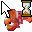
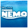
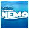
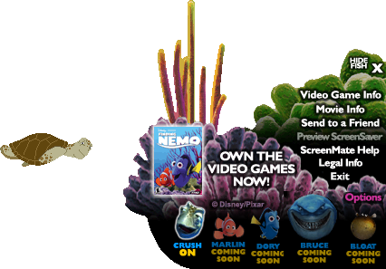
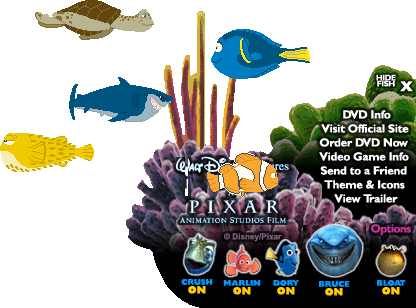
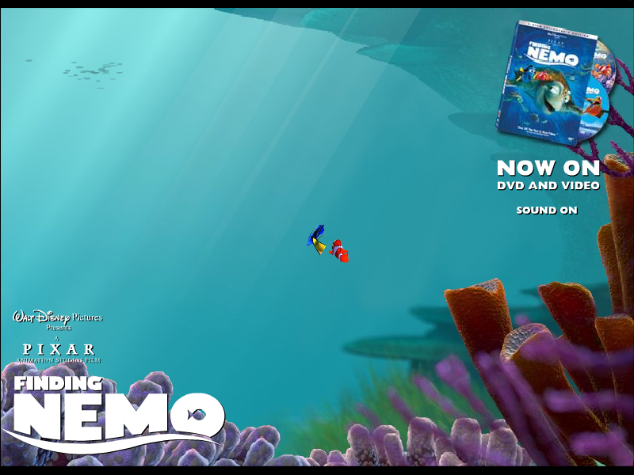
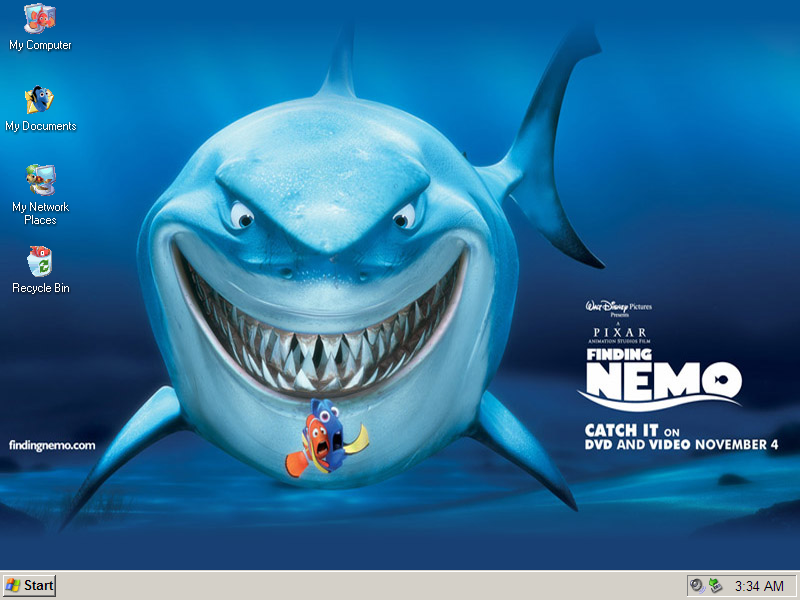

Finding Nemo Extras

Finding Nemo Cursors

DOWNLOAD
 2 cursors (.ico format) (3.09 KB)
2 cursors (.ico format) (3.09 KB)
2 cursors (.cur format) (1.84 KB)
Finding Nemo Desktop Icons
DOWNLOAD
5 .ico (Windows Icon) files zipped (8.24 KB)
Finding Nemo IM Icons

DOWNLOAD
4 .gif files zipped (23.1 KB)
Finding Nemo ScreenMate
Comes with 2 versions, and doubles as a screensaver.


DOWNLOAD
.exe file zipped (version 1) (1.93 MB)
.exe file zipped (version 2) (2.11 MB)
Finding Nemo Screensaver

DOWNLOAD
.exe file zipped (Windows) (1.98 MB)
.sit file (Mac OS 9) (1.99 MB)
.sit file (Mac OS X) (1.87 MB)
Finding Nemo Theme

DOWNLOAD
.zip file (110 KB)